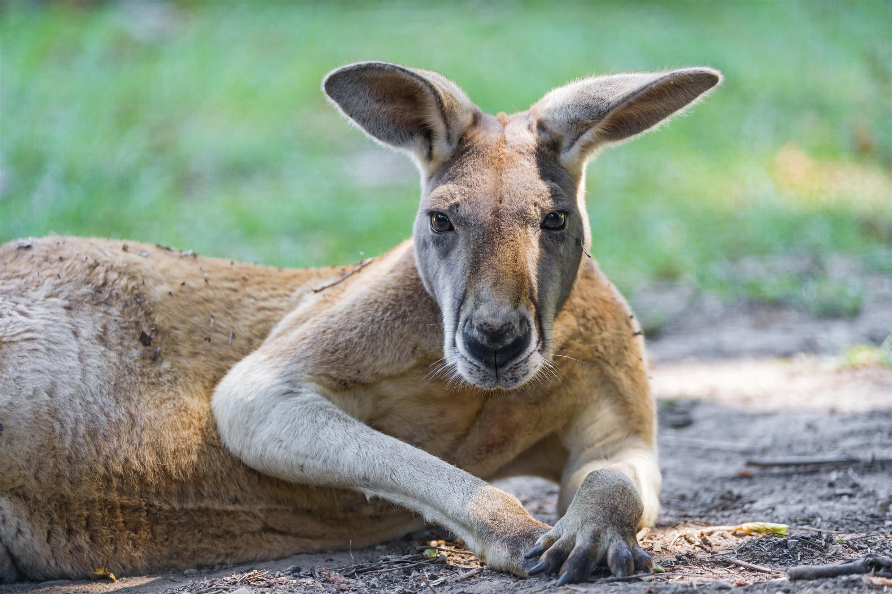

Canguro

Nombre común: Canguro
Nombre científico: Macropus
Hábitat y estilo de vida:
El canguro es un marsupial nativo de Australia. Habita principalmente en áreas abiertas como praderas, bosques y desiertos, aunque algunas especies también se encuentran en áreas costeras. Los canguros son animales herbívoros y generalmente viven en grupos sociales llamados "mobs". Tienen una vida activa durante el día (diurna) y se alimentan principalmente de pasto, hojas y plantas. Son conocidos por sus largas patas traseras adaptadas para saltar grandes distancias, lo que les ayuda a desplazarse rápidamente por su hábitat.
5 características del canguro:
- Saltadores excepcionales: Los canguros son famosos por su habilidad para saltar. Utilizan sus poderosas patas traseras para dar grandes saltos, lo que les permite desplazarse rápidamente y cubrir grandes distancias a través de su entorno.
- Patas traseras fuertes y cola musculosa: Tienen patas traseras muy fuertes que les permiten saltar, mientras que su cola es larga, musculosa y sirve para mantener el equilibrio al saltar o cuando se desplazan en su entorno.
- Marsupiales: Como todos los marsupiales, las hembras de canguro tienen una bolsa (marsupio) en la que crían a sus crías. Al nacer, las crías son muy pequeñas e inmaduras y se desarrollan dentro de la bolsa materna durante varias semanas antes de empezar a explorar el mundo exterior.
- Comportamiento social: Los canguros suelen vivir en grupos llamados "mobs", que pueden variar en tamaño, pero generalmente están formados por hembras, crías y algunos machos. El comportamiento social les ayuda a protegerse de depredadores.
- Alimentación herbívora: Son animales herbívoros y su dieta está compuesta principalmente por pasto, hojas y plantas. Su sistema digestivo está adaptado para extraer nutrientes de las plantas fibrosas que consumen, permitiéndoles sobrevivir en ambientes donde los alimentos pueden ser limitados.
regresar al menu